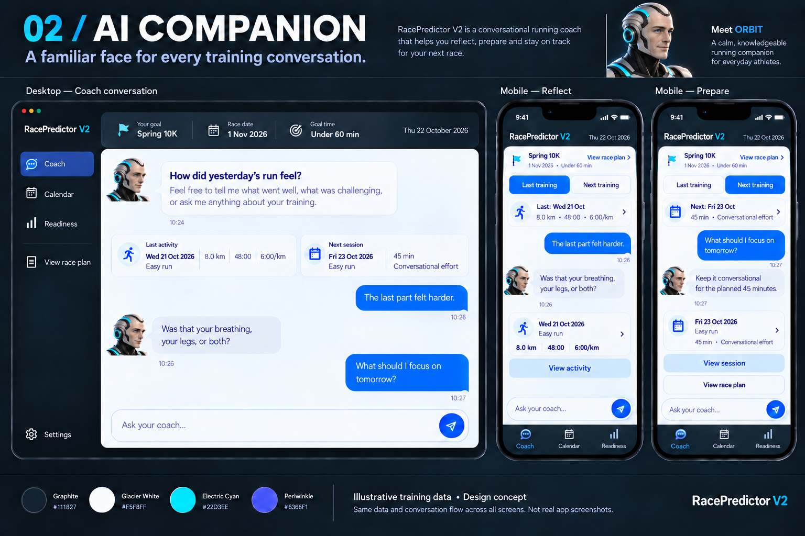

01 · Night Ops
Recognisably the current product. The main change is how the athlete interacts with the coach.
Recommended for continuity and the smallest visual transition.
AI Companion and the final mature humanoid male ORBIT images are approved for the future site. Compare it with the other concepts below. Every direction uses illustrative training data; these are static visual design boards.

A mature male athletic coach with natural facial contours, subtle age lines, brushed-silver temples, and restrained cyan details. The graphite shell and glacier conversation surfaces retain the original look and feel.
Recognisably the current product. The main change is how the athlete interacts with the coach.
Recommended for continuity and the smallest visual transition.
ORBIT is a mature, sophisticated humanoid male athletic coach. Small avatars accompany the transcript, with light conversation surfaces inside a graphite shell.
Approved direction. Explore his full character design and the earlier version.
A warm running journal: paper, forest-green ink, terracotta accents, editorial typography, and restrained landscape art.
Recommended for a distinctive, reflective coaching identity. Existing dark detail views need a deliberate transition.
Implementation planning: Approved layout and architect handoff.
| Screen or state | Scope |
|---|---|
| Coach arrival | New Home composition: compact race goal, last/next context, coaching opening, and message composer. |
| Reflection and preparation | Two conversation states of the same Coach screen, with relevant record actions and persistent topic switching. |
| Return to Coach | Same transcript and selected context, with current facts refreshed after viewing or editing elsewhere. |
| Optional wellbeing and chat recovery | Existing check-in form on request; loading, empty, failed, and retry states specified in the design brief. |
| Calendar, activity detail, race plan | Existing destinations. Chat opens the relevant view; structured changes keep their current explicit workflows. |
Read the screen design brief, first-iteration scope, and product-flow diagrams.